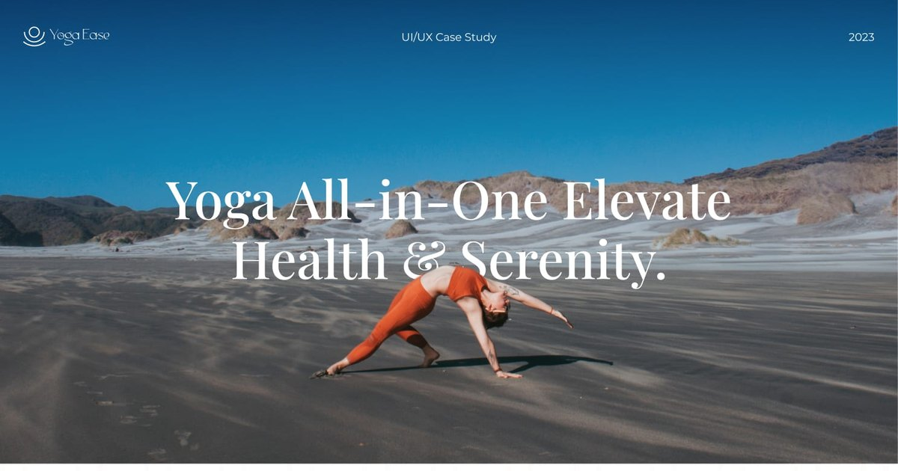

Healthcare · Product design
One connected system for faster, simpler diagnostics.
A diagnostic platform that puts patients, front-desk staff, admins and home-collection teams on one shared record, across five products.


01 — Problem → solution
What was broken, and how I fixed it.
- Problem 01
Information was scattered across systems, so no one saw the full picture of a test.
SolutionOne shared record that all five products read and write.
- Problem 02
The front desk re-keyed the same patient details between roles.
SolutionOne quick registration path, with tests and appointments on a single screen.
- Problem 03
Patients and staff couldn’t see where a test was.
SolutionOne visible status from booking through collection to report, for everyone.
02 — Key screens
The design.
Patient app
- Search and quick actions sit above the fold.
- Upcoming appointments are on the home screen, so status needs no navigation.
Front desk
- Patient record and booking actions share one view — no context switch.
- A dense table, because scanning beats scrolling in an all-day tool.
Admin
- Overview metrics lead, so the state of the operation is read first.
- Charts sit beside the records they summarise.
Home collector
- Each task carries its own visit details.
- The visit order is given, not worked out by the collector.
03 — Outcome
A unified diagnostic ecosystem.
- 01
One connected system serving all five kinds of user.
- 02
Less manual work, and fewer errors from re-entering data.
- 03
A test patients can follow from booking to report.
- 04
A design system that scales across web and mobile.
Five roles each had a confident opinion about their own screen. The hard call was holding off on screens until the shared workflow underneath was settled — and testing feasibility with the teams on the floor before release.
